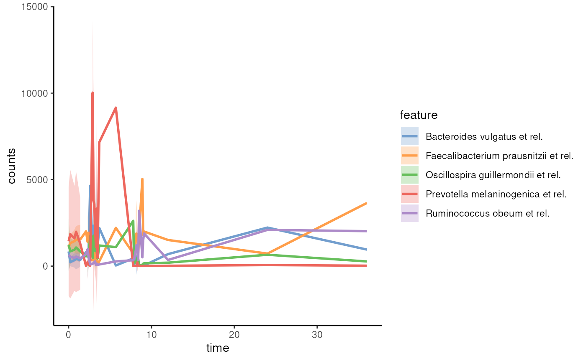

miaTime is a package in the mia family,
providing tools for time series manipulation using the TreeSummarizedExperiment
data container.
miaTime is hosted on Bioconductor, and can be installed
using via BiocManager.
BiocManager::install("miaTime")Once installed, miaTime is made available in the usual
way.
library(miaTime)
#> Loading required package: mia
#> Loading required package: MultiAssayExperiment
#> Loading required package: SummarizedExperiment
#> Loading required package: MatrixGenerics
#> Loading required package: matrixStats
#>
#> Attaching package: 'MatrixGenerics'
#> The following objects are masked from 'package:matrixStats':
#>
#> colAlls, colAnyNAs, colAnys, colAvgsPerRowSet, colCollapse,
#> colCounts, colCummaxs, colCummins, colCumprods, colCumsums,
#> colDiffs, colIQRDiffs, colIQRs, colLogSumExps, colMadDiffs,
#> colMads, colMaxs, colMeans2, colMedians, colMins, colOrderStats,
#> colProds, colQuantiles, colRanges, colRanks, colSdDiffs, colSds,
#> colSums2, colTabulates, colVarDiffs, colVars, colWeightedMads,
#> colWeightedMeans, colWeightedMedians, colWeightedSds,
#> colWeightedVars, rowAlls, rowAnyNAs, rowAnys, rowAvgsPerColSet,
#> rowCollapse, rowCounts, rowCummaxs, rowCummins, rowCumprods,
#> rowCumsums, rowDiffs, rowIQRDiffs, rowIQRs, rowLogSumExps,
#> rowMadDiffs, rowMads, rowMaxs, rowMeans2, rowMedians, rowMins,
#> rowOrderStats, rowProds, rowQuantiles, rowRanges, rowRanks,
#> rowSdDiffs, rowSds, rowSums2, rowTabulates, rowVarDiffs, rowVars,
#> rowWeightedMads, rowWeightedMeans, rowWeightedMedians,
#> rowWeightedSds, rowWeightedVars
#> Loading required package: GenomicRanges
#> Loading required package: stats4
#> Loading required package: BiocGenerics
#>
#> Attaching package: 'BiocGenerics'
#> The following objects are masked from 'package:stats':
#>
#> IQR, mad, sd, var, xtabs
#> The following objects are masked from 'package:base':
#>
#> anyDuplicated, aperm, append, as.data.frame, basename, cbind,
#> colnames, dirname, do.call, duplicated, eval, evalq, Filter, Find,
#> get, grep, grepl, intersect, is.unsorted, lapply, Map, mapply,
#> match, mget, order, paste, pmax, pmax.int, pmin, pmin.int,
#> Position, rank, rbind, Reduce, rownames, sapply, saveRDS, setdiff,
#> table, tapply, union, unique, unsplit, which.max, which.min
#> Loading required package: S4Vectors
#>
#> Attaching package: 'S4Vectors'
#> The following object is masked from 'package:utils':
#>
#> findMatches
#> The following objects are masked from 'package:base':
#>
#> expand.grid, I, unname
#> Loading required package: IRanges
#> Loading required package: GenomeInfoDb
#> Loading required package: Biobase
#> Welcome to Bioconductor
#>
#> Vignettes contain introductory material; view with
#> 'browseVignettes()'. To cite Bioconductor, see
#> 'citation("Biobase")', and for packages 'citation("pkgname")'.
#>
#> Attaching package: 'Biobase'
#> The following object is masked from 'package:MatrixGenerics':
#>
#> rowMedians
#> The following objects are masked from 'package:matrixStats':
#>
#> anyMissing, rowMedians
#> Loading required package: SingleCellExperiment
#> Loading required package: TreeSummarizedExperiment
#> Loading required package: Biostrings
#> Loading required package: XVector
#>
#> Attaching package: 'Biostrings'
#> The following object is masked from 'package:base':
#>
#> strsplit
#> This is mia version 1.15.3
#> - Online documentation and vignettes: https://microbiome.github.io/mia/
#> - Online book 'Orchestrating Microbiome Analysis (OMA)': https://microbiome.github.io/OMA/docs/devel/miaTime offers functions to calculate divergences. These
can be calculated based on samples and their corresponding base time
point, e.g., first sample of time series. Moreover, divergences can be
calculated in rolling basis meaning that a sample is compared to
previous ith sample.
Divergences can be calculated with get*Divergence()
functions. In the example below, for each subject, we calculate the
divergence of their samples by comparing them to the first time
point.
data(hitchip1006)
tse <- hitchip1006
res <- getBaselineDivergence(
tse, time.col = "time", group = "sample", name = "baseline")
res |> head()
#> DataFrame with 6 rows and 2 columns
#> baseline time_diff
#> <numeric> <numeric>
#> Sample-1 0 0
#> Sample-2 0 0
#> Sample-3 0 0
#> Sample-4 0 0
#> Sample-5 0 0
#> Sample-6 0 0A more convenient and preferred approach is to store the values
directly in colData using the get*Divergence()
functions. In the example below, we calculate stepwise divergences with
a lag of 1, meaning that for each sample, the divergence is calculated
by comparing it to the previous time point for the same subject.
tse <- addStepwiseDivergence(tse, time.col = "time")
colData(tse)
#> DataFrame with 1151 rows and 12 columns
#> age sex nationality DNA_extraction_method project
#> <integer> <factor> <factor> <factor> <factor>
#> Sample-1 28 male US NA 1
#> Sample-2 24 female US NA 1
#> Sample-3 52 male US NA 1
#> Sample-4 22 female US NA 1
#> Sample-5 25 female US NA 1
#> ... ... ... ... ... ...
#> Sample-1168 50 female Scandinavia r 40
#> Sample-1169 31 female Scandinavia r 40
#> Sample-1170 31 female Scandinavia r 40
#> Sample-1171 52 male Scandinavia r 40
#> Sample-1172 52 male Scandinavia r 40
#> diversity bmi_group subject time sample divergence
#> <numeric> <factor> <factor> <numeric> <character> <numeric>
#> Sample-1 5.76 severeobese 1 0 Sample-1 NA
#> Sample-2 6.06 obese 2 0 Sample-2 0.411871
#> Sample-3 5.50 lean 3 0 Sample-3 0.627062
#> Sample-4 5.87 underweight 4 0 Sample-4 0.728678
#> Sample-5 5.89 lean 5 0 Sample-5 0.348764
#> ... ... ... ... ... ... ...
#> Sample-1168 5.87 severeobese 244 8.1 Sample-1168 0.492691
#> Sample-1169 5.87 overweight 245 2.3 Sample-1169 0.284404
#> Sample-1170 5.92 overweight 245 8.2 Sample-1170 0.531075
#> Sample-1171 6.04 overweight 246 2.1 Sample-1171 0.306739
#> Sample-1172 5.74 overweight 246 7.9 Sample-1172 0.485427
#> time_diff
#> <numeric>
#> Sample-1 NA
#> Sample-2 0
#> Sample-3 0
#> Sample-4 0
#> Sample-5 0
#> ... ...
#> Sample-1168 0.0
#> Sample-1169 0.0
#> Sample-1170 0.0
#> Sample-1171 0.7
#> Sample-1172 0.1We can visualize time series data with miaViz. Below, we visualize 2 most abundant taxa.
library(miaViz)
#> Loading required package: ggplot2
#> Loading required package: ggraph
#>
#> Attaching package: 'miaViz'
#> The following object is masked from 'package:mia':
#>
#> plotNMDS
p <- plotSeries(tse, x = "time", y = getTop(tse, 5))
p
See articles for more detailed example workflows.
sessionInfo()
#> R Under development (unstable) (2024-11-20 r87352)
#> Platform: x86_64-pc-linux-gnu
#> Running under: Ubuntu 24.04.1 LTS
#>
#> Matrix products: default
#> BLAS: /usr/lib/x86_64-linux-gnu/openblas-pthread/libblas.so.3
#> LAPACK: /usr/lib/x86_64-linux-gnu/openblas-pthread/libopenblasp-r0.3.26.so; LAPACK version 3.12.0
#>
#> locale:
#> [1] LC_CTYPE=en_US.UTF-8 LC_NUMERIC=C
#> [3] LC_TIME=en_US.UTF-8 LC_COLLATE=en_US.UTF-8
#> [5] LC_MONETARY=en_US.UTF-8 LC_MESSAGES=en_US.UTF-8
#> [7] LC_PAPER=en_US.UTF-8 LC_NAME=C
#> [9] LC_ADDRESS=C LC_TELEPHONE=C
#> [11] LC_MEASUREMENT=en_US.UTF-8 LC_IDENTIFICATION=C
#>
#> time zone: UTC
#> tzcode source: system (glibc)
#>
#> attached base packages:
#> [1] stats4 stats graphics grDevices utils datasets methods
#> [8] base
#>
#> other attached packages:
#> [1] miaViz_1.14.0 ggraph_2.2.1
#> [3] ggplot2_3.5.1 miaTime_0.99.0
#> [5] mia_1.15.3 TreeSummarizedExperiment_2.14.0
#> [7] Biostrings_2.74.0 XVector_0.46.0
#> [9] SingleCellExperiment_1.28.0 MultiAssayExperiment_1.32.0
#> [11] SummarizedExperiment_1.36.0 Biobase_2.66.0
#> [13] GenomicRanges_1.58.0 GenomeInfoDb_1.42.0
#> [15] IRanges_2.40.0 S4Vectors_0.44.0
#> [17] BiocGenerics_0.52.0 MatrixGenerics_1.18.0
#> [19] matrixStats_1.4.1 knitr_1.49
#> [21] BiocStyle_2.34.0
#>
#> loaded via a namespace (and not attached):
#> [1] splines_4.5.0 ggplotify_0.1.2
#> [3] tibble_3.2.1 polyclip_1.10-7
#> [5] rpart_4.1.23 DirichletMultinomial_1.48.0
#> [7] lifecycle_1.0.4 lattice_0.22-6
#> [9] MASS_7.3-61 SnowballC_0.7.1
#> [11] backports_1.5.0 magrittr_2.0.3
#> [13] Hmisc_5.2-0 sass_0.4.9
#> [15] rmarkdown_2.29 jquerylib_0.1.4
#> [17] yaml_2.3.10 DBI_1.2.3
#> [19] minqa_1.2.8 abind_1.4-8
#> [21] zlibbioc_1.52.0 purrr_1.0.2
#> [23] yulab.utils_0.1.7 nnet_7.3-19
#> [25] tweenr_2.0.3 sandwich_3.1-1
#> [27] GenomeInfoDbData_1.2.13 ggrepel_0.9.6
#> [29] tokenizers_0.3.0 irlba_2.3.5.1
#> [31] tidytree_0.4.6 vegan_2.6-8
#> [33] rbiom_1.0.3 pkgdown_2.1.1
#> [35] permute_0.9-7 DelayedMatrixStats_1.28.0
#> [37] codetools_0.2-20 DelayedArray_0.32.0
#> [39] scuttle_1.16.0 ggforce_0.4.2
#> [41] tidyselect_1.2.1 aplot_0.2.3
#> [43] UCSC.utils_1.2.0 farver_2.1.2
#> [45] lme4_1.1-35.5 ScaledMatrix_1.14.0
#> [47] viridis_0.6.5 base64enc_0.1-3
#> [49] jsonlite_1.8.9 BiocNeighbors_2.0.0
#> [51] decontam_1.26.0 tidygraph_1.3.1
#> [53] Formula_1.2-5 scater_1.34.0
#> [55] systemfonts_1.1.0 tools_4.5.0
#> [57] ggnewscale_0.5.0 treeio_1.30.0
#> [59] ragg_1.3.3 Rcpp_1.0.13-1
#> [61] glue_1.8.0 gridExtra_2.3
#> [63] SparseArray_1.6.0 xfun_0.49
#> [65] mgcv_1.9-1 dplyr_1.1.4
#> [67] withr_3.0.2 BiocManager_1.30.25
#> [69] fastmap_1.2.0 boot_1.3-31
#> [71] bluster_1.16.0 fansi_1.0.6
#> [73] digest_0.6.37 rsvd_1.0.5
#> [75] R6_2.5.1 gridGraphics_0.5-1
#> [77] textshaping_0.4.0 colorspace_2.1-1
#> [79] lpSolve_5.6.21 utf8_1.2.4
#> [81] tidyr_1.3.1 generics_0.1.3
#> [83] data.table_1.16.2 DECIPHER_3.2.0
#> [85] graphlayouts_1.2.0 httr_1.4.7
#> [87] htmlwidgets_1.6.4 S4Arrays_1.6.0
#> [89] pkgconfig_2.0.3 gtable_0.3.6
#> [91] janeaustenr_1.0.0 htmltools_0.5.8.1
#> [93] bookdown_0.41 scales_1.3.0
#> [95] ggfun_0.1.7 rstudioapi_0.17.1
#> [97] reshape2_1.4.4 checkmate_2.3.2
#> [99] nlme_3.1-166 nloptr_2.1.1
#> [101] cachem_1.1.0 zoo_1.8-12
#> [103] stringr_1.5.1 parallel_4.5.0
#> [105] vipor_0.4.7 foreign_0.8-87
#> [107] desc_1.4.3 pillar_1.9.0
#> [109] grid_4.5.0 vctrs_0.6.5
#> [111] slam_0.1-54 BiocSingular_1.22.0
#> [113] beachmat_2.22.0 cluster_2.1.6
#> [115] beeswarm_0.4.0 htmlTable_2.4.3
#> [117] evaluate_1.0.1 mvtnorm_1.3-1
#> [119] cli_3.6.3 compiler_4.5.0
#> [121] rlang_1.1.4 crayon_1.5.3
#> [123] tidytext_0.4.2 labeling_0.4.3
#> [125] mediation_4.5.0 plyr_1.8.9
#> [127] fs_1.6.5 ggbeeswarm_0.7.2
#> [129] stringi_1.8.4 viridisLite_0.4.2
#> [131] BiocParallel_1.40.0 munsell_0.5.1
#> [133] lazyeval_0.2.2 Matrix_1.7-1
#> [135] patchwork_1.3.0 sparseMatrixStats_1.18.0
#> [137] igraph_2.1.1 memoise_2.0.1
#> [139] RcppParallel_5.1.9 bslib_0.8.0
#> [141] ggtree_3.14.0 ape_5.8